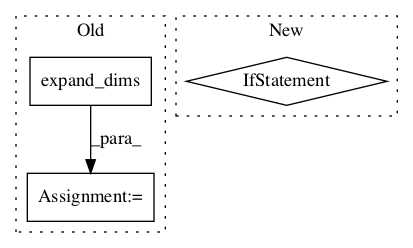

2491af9de0dd8d20c4bb8236d9c51cdb33f14060,deepexplain/tensorflow/methods.py,IntegratedGradients,run,#IntegratedGradients#,172

Before Change
def run(self):
if self.baseline is None: self.baseline = np.zeros((1,)+self.xs.shape[1:])
elif self.baseline.shape == self.xs.shape[1:]:
self.baseline = np.expand_dims(self.baseline, 0)
else:
raise RuntimeError("Baseline shape %s does not match expected shape %s"
% (self.baseline.shape, self.xs.shape[1:]))
attributions = self.get_symbolic_attribution()
After Change
if gradient is None: gradient = np.array(_attr)
else: gradient += np.array(_attr)
results = gradient * (np.array(self.xs) - np.array(self.baseline)) / self.steps
return results[0] if not self.has_multiple_inputs else results
Layer-wise Relevance Propagation with epsilon rule
In pattern: SUPERPATTERN
Frequency: 3
Non-data size: 3
Instances
Project Name: marcoancona/DeepExplain
Commit Name: 2491af9de0dd8d20c4bb8236d9c51cdb33f14060
Time:
Author: null
File Name: deepexplain/tensorflow/methods.py
Class Name: IntegratedGradients
Method Name: run
Project Name: asyml/texar
Commit Name: 830108b4b5f71f1a63cbd97c8131ba1aef4ac56a
Time:
Author: null
File Name: texar/utils/shapes.py
Class Name:
Method Name: mask_sequences
Project Name: tensorflow/models
Commit Name: fcd690b14b04c11e7f25b9d473db056c4b7947b3
Time:
Author: null
File Name: official/vision/keras_cv/ops/iou_similarity.py
Class Name:
Method Name: iou